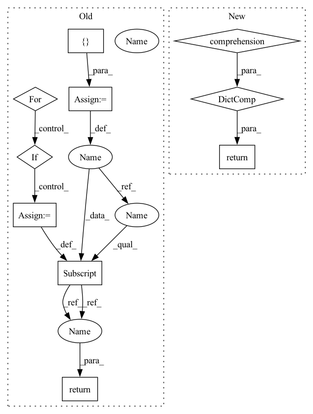

Pattern ID :16878
Before Change
def get_kw(cls, kwargs):
"""保留排除cls的入参后的kwargs
"""
kwargs_new = {}
for k in kwargs:
if k not in set(inspect.getargspec(cls)[0]):
kwargs_new[k] = kwargs[k]
return kwargs_new After Change
def get_kw(cls, kwargs, start_idx=3):
"""保留类下的kwargs
"""
return {i:kwargs[i] for i in inspect.getargspec(cls)[0][start_idx:]}
In pattern: SUPERPATTERN
Frequency: 5
Non-data size: 10
Instances Fragment ID: 56772242
Project Name: tongjilibo/rec4torch
Commit Name: 2e58b4617f63bad6f32e64ccb1b4b3a2569f0eb5
Time: 2022-10-17
Author: lb@libos-MacBook-Pro.local
File Name: rec4torch/snippets.py
M Class Name: AnonimousClass
N Class Name: AnonimousClass
M Method Name: get_kw(3)
N Method Name: get_kw(2)
M Parent Class:
N Parent Class:
M File Name: rec4torch/snippets.py
N File Name: rec4torch/snippets.py
M Start Line: 527
M End Line: 531
N Start Line: 524
N End Line: 527
Before Change
:param module: the module to grab all linear layers for
:return: a list of all linear layers in the module
linears = {}
for name, mod in module.named_modules():
if isinstance(mod, Linear):
linears[name] = mod
return linears
def get_prunable_layers(module: Module) -> List[Tuple[str, Module]]:After Change
:param module: the module to grab all linear layers for
:return: a list of all linear layers in the module
return {
name: mod for name, mod in module.named_modules() if isinstance(mod, Linear)
}
def get_prunable_layers(module: Module) -> List[Tuple[str, Module]]:
Fragment ID: 56772243
Project Name: neuralmagic/sparseml
Commit Name: 23b37a7c38f6219cf0d77cc338190b7348a25337
Time: 2022-03-10
Author: 29055749+zjzh@users.noreply.github.com
File Name: src/sparseml/pytorch/utils/helpers.py
M Class Name: AnonimousClass
N Class Name: AnonimousClass
M Method Name: get_linear_layers(1)
N Method Name: get_linear_layers(1)
M Parent Class:
N Parent Class:
M File Name: src/sparseml/pytorch/utils/helpers.py
N File Name: src/sparseml/pytorch/utils/helpers.py
M Start Line: 753
M End Line: 759
N Start Line: 749
N End Line: 751
Before Change
Returns:
dict mapping flag names (string) to values (various types).
ret = {}
for name, value in FLAGS.flag_values_dict().items():
if FLAGS.find_module_defining_flag(name) == __name__:
ret[name] = value
return ret
After Change
def get_flags():
Get all of the flags in SERVER_FLAGS in this module.
return {entry.name: entry.value for entry in _SERVER_FLAGS}
Fragment ID: 56772244
Project Name: pair-code/lit
Commit Name: 3d82886025a01aef20594a52f5dd0f702d42641c
Time: 2022-08-09
Author: iftenney@google.com
File Name: lit_nlp/server_flags.py
M Class Name: AnonimousClass
N Class Name: AnonimousClass
M Method Name: get_flags(0)
N Method Name: get_flags(0)
M Parent Class:
N Parent Class:
M File Name: lit_nlp/server_flags.py
N File Name: lit_nlp/server_flags.py
M Start Line: 91
M End Line: 95
N Start Line: 96
N End Line: 96
Before Change
:param module: the module to grab all conv layers for
:return: a list of all the conv layers in the module
convs = {}
for name, mod in module.named_modules():
if isinstance(mod, _ConvNd):
convs[name] = mod
return convs
def get_linear_layers(module: Module) -> Dict[str, Module]:After Change
:param module: the module to grab all conv layers for
:return: a list of all the conv layers in the module
return {
name: mod for name, mod in module.named_modules() if isinstance(mod, _ConvNd)
}
def get_linear_layers(module: Module) -> Dict[str, Module]:
Fragment ID: 56772245
Project Name: neuralmagic/sparseml
Commit Name: 23b37a7c38f6219cf0d77cc338190b7348a25337
Time: 2022-03-10
Author: 29055749+zjzh@users.noreply.github.com
File Name: src/sparseml/pytorch/utils/helpers.py
M Class Name: AnonimousClass
N Class Name: AnonimousClass
M Method Name: get_conv_layers(1)
N Method Name: get_conv_layers(1)
M Parent Class:
N Parent Class:
M File Name: src/sparseml/pytorch/utils/helpers.py
N File Name: src/sparseml/pytorch/utils/helpers.py
M Start Line: 739
M End Line: 745
N Start Line: 739
N End Line: 741
Before Change
if es_aggregations is None:
return None
aggs = {}
for key, values in es_aggregations.items() or {}:
split_key = key.split(".")
base_key = split_key[0]
rest_key = ".".join(split_key[1:])
aggregation = {
bucket["key"]: bucket["doc_count"] for bucket in values.get("buckets", {})
}
if not rest_key:
aggs[base_key] = aggregation
else:
current_value = aggs.get(base_key)
if current_value is None:
aggs[base_key] = {rest_key: aggregation}
else:
current_value[rest_key] = aggregation
return aggs
def decode_sortable_field(field: SortableField) -> str:After Change
if es_aggregations is None:
return None
return {
key: {
bucket["key"]: bucket["doc_count"] for bucket in values.get("buckets", {})
}
for key, values in es_aggregations.items() or {}
}
def decode_sortable_field(field: SortableField) -> str:
return field.value Fragment ID: 56772235
Project Name: recognai/rubrix
Commit Name: 3131418c72d274ede822de0e4404376cc00bf18b
Time: 2021-04-14
Author: francisco@recogn.ai
File Name: src/rubrix/server/dataset_records/es_helpers.py
M Class Name: AnonimousClass
N Class Name: AnonimousClass
M Method Name: parse_aggregations(1)
N Method Name: parse_aggregations(1)
M Parent Class:
N Parent Class:
M File Name: src/rubrix/server/dataset_records/es_helpers.py
N File Name: src/rubrix/server/dataset_records/es_helpers.py
M Start Line: 82
M End Line: 99
N Start Line: 82
N End Line: 87